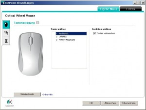

Ich bin Linkshänder. Dementsprechend schreibe ich mit links, telefoniere mit links, trinke mit links und nutze eben auch die Maus mit der linken Hand. Lokal ist das mit Windows kein Problem. Ein Mausklick in den Mauseinstellungen in der Systemsteuerung und die Maustasten sind in allen Windowsprogrammen vertauscht. Doch ich arbeite eben nicht nur lokal.
Als Administrator nutze ich auch öfters die Remotedesktopverbindung von Windows, um auf unsere Server zuzugreifen. Immerhin wollen auch die gewartet, konfiguriert oder - typisch Windows - immer wieder mal neugestartet werden. Doch die lokalen Mauseinstellungen von Windows werden leider nicht auf den Remoterechner übertragen. Im Remotefenster ist dann nach wie vor eine Rechtshändersteuerung ohne vertauschte Tasten, auf dem lokalen PC sind die Einstellungen linkshändergerecht. Da ich nicht der einzige bin, der mit dem Administratorkonto auf die Server zugreift, kann ich das auch nicht auf dem Remote-PC umstellen. Auf die Dauer nervt dieses Umgedenke ganz schön.
Einziger Lösungsansatz, den ich bisher finden konnte: Logitech Mäuse. Logitech liefert mit seinen höherwertigen einen eigenen Treiber, SetPoint gennant. Dieser lässt ebenfalls eine Umstellung der Tasten zu, allerdings funktioniert diese Einstellung dann sowohl auf dem lokalen Rechner, als auch auf Remote-PCs, als auch - das hatte ich noch gar nicht erwähnt - zuverlässig in Vollbildanwendungen wie z.B. Spielen.
Wenn es euch an eurem Schreibtisch wie mir geht und ihr eine nicht so höherwertige Maus habt, lässt euch Logitech allerdings auf seiner Supportseite keinen SetPoint-Treiber herunterladen, sondern verweist euch auf die ausreichenden Windows-Treiber. Wählt dann einfach eine andere Maus aus, die garantiert den Download unterstützt, der Treiber beinhaltet Konfigurationen für alle Mäuse. Vermutlich wird eure Maus dann nich modellgenau erkannt, aber das ist geschenkt. Es reicht ja, wenn die Anzahl der Maustasten übereinstimmt.
Wie geht es denn anderen Leidensgenossen unter meinen Administratorkollegen? Wie regelt ihr die Linkshänderproblematik? Oder nutzt ihr als Linkshänder trotzdem die Maus mit der rechten Hand?
{kind=link}
{kind=link}